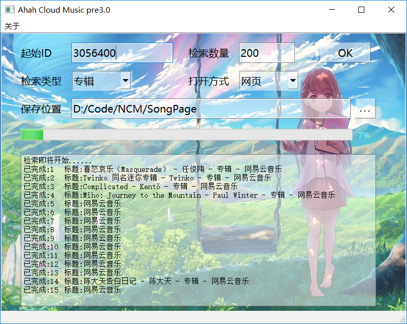

前言
本人是网易云音乐听歌量30000+用户，主要听电子音乐，其他类型音乐亦有涉及。随着听歌量的增长，就会越来越发现一个问题，就是有大量的优质冷门音乐无人问津。对于多数普通用户而言，所听音乐以评论数999+甚至1w+的热门歌曲为主。但实际上，999+评论的音乐只是网易云庞大曲库的冰山一角，冰山以下蕴含丰富的宝藏。
本人开发的这个程序，试图用最原始的方法——按歌曲专辑id序号顺序逐一展示与挑选音乐。
本软件采用Python爬虫技术，逐一爬取规定范围内的各专辑ID的网址和名称，并将其所得数据整理到HTML文件中，方便挑选音乐。
目前程序仍处于开发阶段，存在诸多待改善之处。最重要的是本人非计算机专业，许多技术还不会，纯粹出于爱好查阅相关资料，最终整合出了这样一个刚好能用的答辩，所以大佬轻喷、轻喷、轻喷啊！
整理这个笔记，也是对开发软件的步骤与技术细节进行一个全面的回顾，列举相关参考资料，为进一步的开发提供便利。
为什么是网易云音乐——目前只有网易云的链接仍然包含数字id，其他平台全用上了乱码，根本无法按顺序检索。
为什么是专辑id——目前网易云音乐的绝大多数歌曲都对应着一个专辑，而一个专辑对应一个或多个单曲，因此检索专辑的效率更高。除专辑id外，本软件亦支持单曲、歌单、用户、歌手、电台、节目、视频、话题的id检索，可以在操作界面中选择。
工具准备
IDE
目前使用的是Visual Studio 2019（当然也可以使用PyCharm）。
Python
Python是一种解释型、面向对象、动态数据类型的高级程序设计语言。本软件使用3.7版本进行开发。
Python3.7中文文档
Python下载地址
菜鸟教程——Python安装教程
安装完成后，在运行的CMD界面中进入Python安装文件夹，输入python -V，出现有版本号则说明Python已经安装到电脑上。
输入cd scripts，则会进入Python的库文件夹，输入pip install xxx==x.x.x即可下载指定版本的插件。
Selenium+PhantomJS
PhantomJS是一个自带JavaScript
API的无头WebKit脚本，即无头浏览器（不展示图形界面）。
PhantomJS下载与安装——中文文档
Selenium+PhantomJS使用
by-qq_38767359
Selenium+PhantomJS使用详解
by-尘世gu行
Selenium是一个Web的自动化测试工具，它可以模拟人类浏览网页时的各种操作，它是一个python库。新版本的selenium已经不在支持PhantomJS，因此需要安装旧版本的selenium。
pip install selenium==2.48.0
Selenium+PhantomJS共同构成所谓的“爬虫”，用于爬取网页上的各类数据。
BeautifulSoup
Beautiful
Soup是一个可以从HTML或XML文件中提取数据的Python库。可以按照一定的规则处理所得的网页源代码，提取想要的数据。本程序中用于提取网页源代码中的专辑名称与专辑图片链接。
pip install beautifulsoup4
还需要搭配第三方解析器lxml
pip install lxml
Beautiful
Soup 4.4.0 文档
爬虫知识——第三方库Beautiful
Soup4 使用总结 by-fengzhen8023
PyQt5
pyqt5中文教程
Python Qt教程
by-白月黑羽
PyQt5是最强大的GUI库之一。本程序使用PyQt5制作一个图形化的界面，使淘歌操作更为方便。
pip install pyqt5-tools
Qt
Designer是一个QT界面生成器，其位置为Python\Lib\site-packages\qt5_applications\Qt\bin
PyInstaller
PyInstaller用于将Python代码编译为可执行文件
pip install pyinstaller
pyinstaller -D -w 入口程序路径\入口程序.py --distpath=目标路径
生成包含exe的文件夹，并在执行的时候不显示黑框（若-D换为-F，则生成单个exe文件；若去掉-w，程序执行时将显示黑框）。
生成含exe的文件夹后，一定要在该文件夹内添加phantomjs.exe，否则点击'ok'键就会闪退。
程序详解
爬取数据并整理成HTML文件
1
2
3
4
5
6
7
8
9
10
11
12
13
14
15
16
17
18
19
20
21
22
23
24
25
26
27
28
29
30
31
32
33
34
| import requests
from urllib.request import urlopen
from selenium import webdriver
from bs4 import BeautifulSoup
i=j=0
id=3057200
num=200
web_or_app=1
list_a=['album','song','playlist','user','artist','djradio','program','mv','activity']
list_b=['专辑','单曲','歌单','用户','歌手','电台','节目','视频','话题']
list_index=0
path = "D:/SongPage/"+ list_b[list_index] + str(id) + "~" + str(id+num-1) + ".htm"
driver = webdriver.PhantomJS()
fp=open(path,"w+",encoding="utf-8")
fp.write("<html>\n<head>\n<meta http-equiv=\"Content-Type\" content=\"text/html; charset=utf-8\">\n</head>\n<body>")
for i in range(num):
url = "https://music.163.com/#/" + list_a[list_index] + "?id=" + str(id+i)
driver.get(url)
driver.switch_to.frame("g_iframe")
html = driver.page_source
soup = BeautifulSoup(html, 'lxml')
title=soup.title.string
if(title!='网易云音乐'):
pic=soup.select('meta[property="og:image"]')[0].attrs['content']
j=j+1
fp.write("<p>" + str(id+i) + "</p>")
fp.write("<img src=\"" + pic + "\"width=\"120\" height=\"120\"/>")
if(web_or_app==1):
url = "orpheus://" + list_a[list_index] + "/" + str(id+i) + "?autoplay=1"
fp.write("<a href=\"" + url + "\">" + title + "</a>")
print("已完成" + str(i+1) + "\t标题:" + str(title))
fp.write("</body>\n</html>")
fp.close()
|
先编写一个如上所示的相对简单的程序，实现基本功能。其中id是检索起始id，num是检索数量。list_index是检索资源的类型，默认为0（专辑）。使用web_or_app变量指定文件的打开形式，用网页打开或者在app内打开。
使用PyQt5绘制操作界面
打开Qt Designer，设计好图形界面后保存，该文件为.ui格式
使用pyuic5将ui文件转换为py文件
pyuic5 - o 新文件名.py ui文件名.ui
PyQt5，Qt
Designer，PyUIC，pyrcc5安装与使用 by-开饭了船长
为图形界面添加背景图片，可以参考以下资料，样式表文件为.qrc格式
PyQt5最详细pyrcc5配置+样式使用
by-咸菜萝卜头
使用pyrcc5将qrc文件转换为py文件
pyrcc5 - o 新文件名.py qrc文件名.qrc
经过亿点点修改后的完整代码如下：
1
2
3
4
5
6
7
8
9
10
11
12
13
14
15
16
17
18
19
20
21
22
23
24
25
26
27
28
29
30
31
32
33
34
35
36
37
38
39
40
41
42
43
44
45
46
47
48
49
50
51
52
53
54
55
56
57
58
59
60
61
62
63
64
65
66
67
68
69
70
71
72
73
74
75
76
77
78
79
80
81
82
83
84
85
86
87
88
| import sys
import requests
from urllib.request import urlopen
from selenium import webdriver
from bs4 import BeautifulSoup
from PyQt5 import QtCore, QtGui, QtWidgets
from PyQt5.QtCore import QObject, pyqtSignal, QThread
from SongWindow import Ui_MainWindow
id=num=list_index=web_or_app=0
path0="D:/Code/NCM/SongPage"
list_e=['album','song','playlist','user','artist','djradio','program','mv','activity']
list_c=['专辑','单曲','歌单','用户','歌手','电台','节目','视频','话题']
class GoSearch(QThread):
_signal = pyqtSignal(int)
_signal2 = pyqtSignal(str)
finished = pyqtSignal()
def __init__(self):
super(GoSearch, self).__init__()
def run(self):
i=j=percent=0
path = path0 + "/" + list_c[list_index] + str(id) + "~" + str(id+num-1) + ".htm"
driver = webdriver.PhantomJS()
fp=open(path,"w+",encoding="utf-8")
fp.write("<html>\n<head>\n<meta http-equiv=\"Content-Type\" content=\"text/html; charset=utf-8\">\n</head>\n<body>")
for i in range(num):
url = "https://music.163.com/#/" + list_e[list_index] + "?id=" + str(id+i)
driver.get(url)
driver.switch_to.frame("g_iframe")
html = driver.page_source
soup = BeautifulSoup(html, 'lxml')
title=soup.title.string
if(title!='网易云音乐'):
pic=soup.select('meta[property="og:image"]')[0].attrs['content']
j=j+1
fp.write("<p>" + str(id+i) + "</p>")
fp.write("<img src=\"" + pic + "\"width=\"120\" height=\"120\"/>")
if(web_or_app==1):
url = "orpheus://" + list_e[list_index] + "/" + str(id+i) + "?autoplay=1"
fp.write("<a href=\"" + url + "\">" + title + "</a>")
infomation="已完成:" + str(i+1) + "\t标题:" + str(title)
percent=int((i+1)/num*100)
self._signal2.emit(infomation)
self._signal.emit(percent)
fp.write("</body>\n</html>")
fp.close()
self.finished.emit()
class mywindow(QtWidgets.QMainWindow,Ui_MainWindow):
def __init__(self):
super(mywindow,self).__init__()
self.setupUi(self)
def OK(self):
global id,num,list_index,web_or_app,path0
id=int(self.lineEdit.text())
num=int(self.lineEdit_2.text())
list_index=int(self.comboBox.currentIndex())
web_or_app=int(self.comboBox_2.currentIndex())
path0=self.lineEdit_3.text()
self.gosearch = GoSearch()
self.test_thread = QThread()
self.gosearch.moveToThread(self.test_thread)
self.gosearch._signal.connect(self.progressBar.setValue)
self.gosearch._signal2.connect(self.plainTextEdit.appendPlainText)
self.gosearch.finished.connect(self.gosearch_finished)
self.test_thread.started.connect(self.gosearch.run)
self.test_thread.start()
self.plainTextEdit.appendPlainText("检索即将开始......")
def gosearch_finished(self):
self.test_thread.quit()
self.test_thread.wait()
self.plainTextEdit.appendPlainText("检索结束")
def path(self):
path0 = QtWidgets.QFileDialog.getExistingDirectory(self,"浏览","D:")
self.lineEdit_3.setText(path0)
app = QtWidgets.QApplication(sys.argv)
window = mywindow()
window.show()
sys.exit(app.exec_())
|
软件操作界面如下图所示，点击OK键即可开始检索。
图1
软件操作界面
检索完成后，HTML文件可在目标文件夹找到。
展望
目前的问题
这个程序目前就是依托堪堪能用的答辩，还有很多需要改进之处。
- 需要爬取完毕才能看到输出的页面结果，需要实时爬取实时出结果。（最好可以直接在网页上操作）
- 目前爬取是单线程的，慢且容易卡死，需要支持多线程。
To Be Countinued未完待续......
参考资料